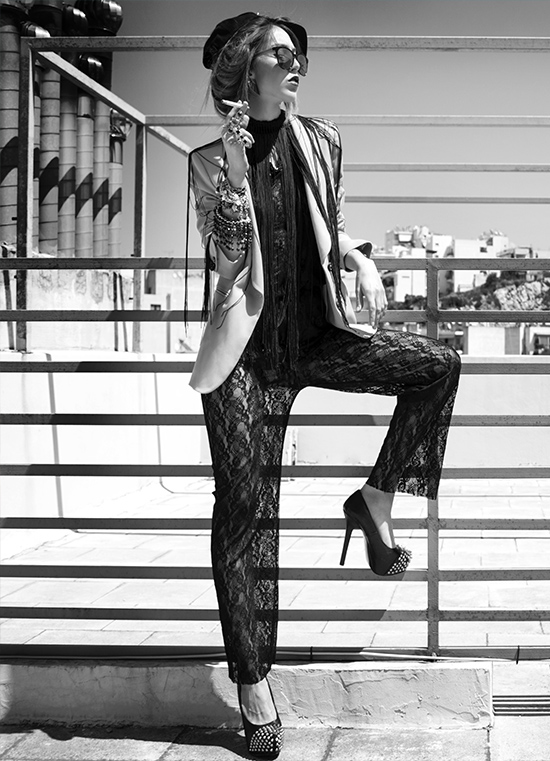
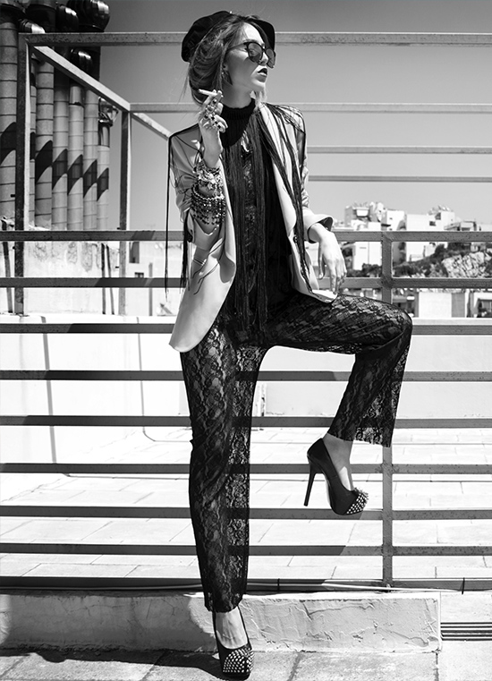

Mounica Kamesam
Program Manager
Thanks for stopping by my website! I recently graduated from Northeastern University in Boston, Massachusetts. In the past few years, I've worked at two awesome companies: a small startup called mabl, located in downtown Boston, and Google in Cambridge. I've also been lucky to be involved with TechTogether Boston, an initiative focused in making tech significantly more inclusive for underrepresented groups. Lately, my free time is occupied with digital drawings, baking, YouTube, and catching up with friends.


 
